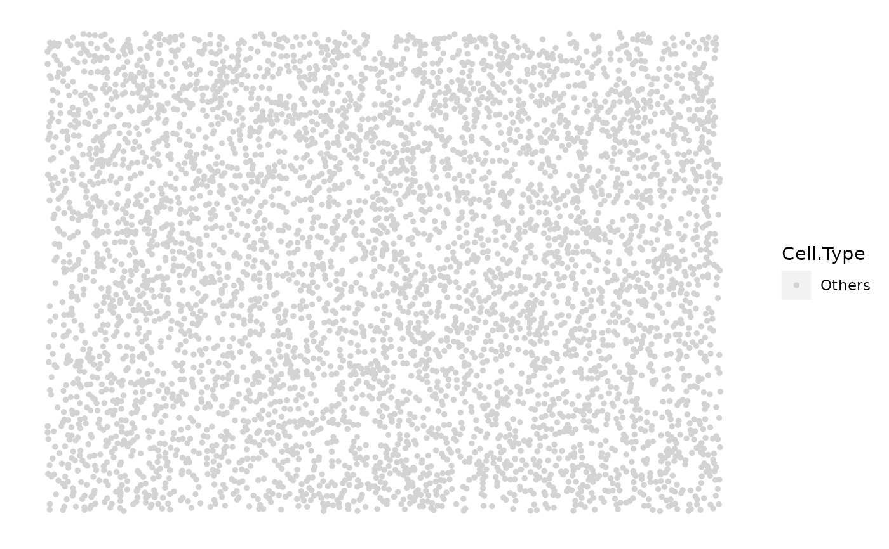

simulate_background_cells.RdSimulate cell locations. The 2D locations of the cells are
simulated and plotted in a rectangular window. Users can specify the window
size, cell number and the minimum distance between two cells. All cells
have the same cell type, specified by the "Cell.Type" param. This
function uses rHardcore spatstat.random.
simulate_background_cells(
n_cells,
width,
height,
min_d,
oversampling_rate = 1.2,
Cell.Type = "Others",
plot_image = TRUE
)Numeric. Number of cells to simulate in the background.
Numeric. The width and height of the image.
Numeric. The minimum distance between two cells.
(OPTIONAL) Numeric. The multiplier for oversampling.
Without oversampling, the simulation deletes cells that are within min_d
from each other, resulting in a less total number of cells than n_cells.
Default is 1.2 (this should be set based on n_cells and min_d; should
always be larger than 1).
(OPTIONAL) String. The name of the background cell type. Default is "Others" since there shouldn't be any identity of the background cells.
(OPTIONAL) Boolean. Default is TRUE.
A data.frame of the simulated background image
simulate_mixing for mixed background simulation,
simulate_clusters for cluster simulation,
simulate_immune_rings/simulate_double_rings for
immune ring simulation, and simulate_stripes for vessel
simulation.
Other simulate pattern functions:
simulate_clusters(),
simulate_double_rings(),
simulate_immune_rings(),
simulate_mixing(),
simulate_stripes()
set.seed(610) # set seed for this background image simulation for reproducibility
background_image <- simulate_background_cells(n_cells = 5000, width = 2000,
height = 2000, min_d = 10,
oversampling_rate = 1.5,
Cell.Type = "Others",
plot_image = TRUE)
